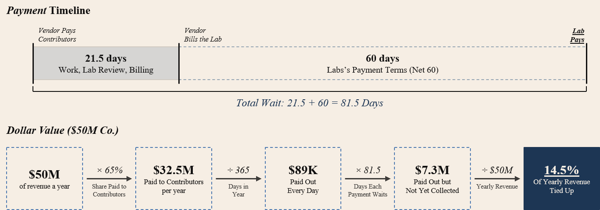
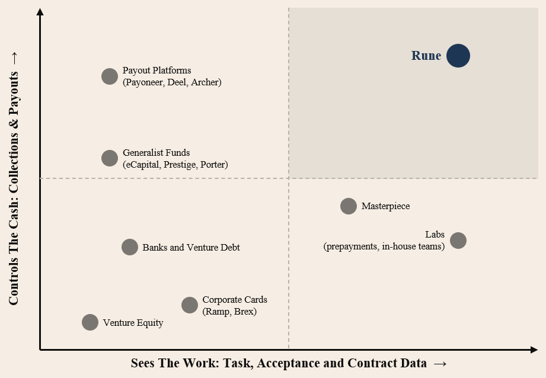
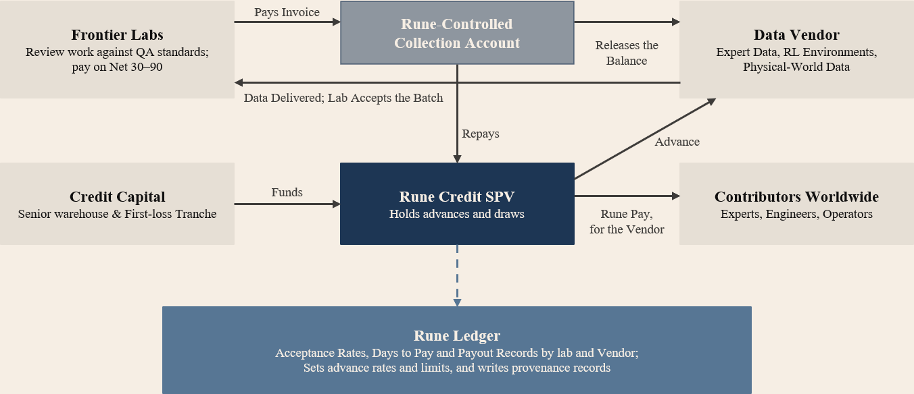
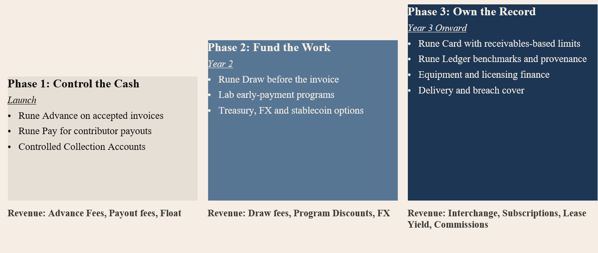

Manifesto · November 2026
RUNE
The process of data collection within the realm of artificial intelligence is invaluable; accumulating tacit knowledge held by disparate individuals across the world enables labs to continuously push models beyond the frontier of what was deemed possible.
However, the data collection space is marred by a financing problem. Data vendors service the best-capitalized labs on the planet, but these vendors fund the data collection process with venture equity, the most expensive capital available; in some cases, potential data is left unfunded and aggregators decline work they could have delivered.
Rune provides financial services for the age of compute, expanding the resources of every data vendor on earth, facilitating the aggregation of increasingly large datasets which drive model development. This is done by providing credit against work that frontier labs have accepted and servicing these vendors who in turn compensate contributors for their work. Every invoice and payment that moves through Rune is recorded, and that record lowers the price of the next advance, ultimately lowering the price of data collection across parties and creating a sense of transparency around data valuations.
WHERE WE ARE
Frontier labs buy expert data and reinforcement-learning (RL) environments from a fast-growing set of vendors, and the current rate of lab spending on human data is growing at 35% per year1. Presently, the gross run-rates of eight vendors sum to ~$9B (Exhibit 1)2 and exponential growth has been evenly distributed across both incumbents and new entrants. Mercor grew from $760M at the end of 2025 to $3B in October 20263, while the environment builder Fleet expanded from $1M to $60M of run-rate in six months4 (outpacing Mercor on an annualized basis).
Growth on these terms consumes cash: contributors receive 65% of each dollar a vendor bills5 and are paid either weekly or daily, whereas labs settle invoices on Net 30 to 90 terms after QA review6. When a vendor pays workers weekly, bills three weeks into a job, and gives clients 60 days to pay, it waits about 82 days to get its money back. That gap ties up 14.5% of its yearly revenue (Exhibit 2). Across a $10B market that is $1.5B of capital required today, growing to $3.5B by 2029; if lab bargaining power were to stretch terms to Net 90 it reaches $5B7.
Current specialist financiers total about $25M, under 2% of the 2026 requirement8. Equity and vendor cash fund part of the rest, and the remainder appears as orders that vendors decline because they cannot carry another month of payroll. At full share, Rune’s combined product pools would earn ~$140M per year on today’s market and ~$330M in the 2029 base case.


The 21.5 days are 15 days on average from work to month-end billing, plus 10 days of lab review and invoicing, less 3.5 days because pay is weekly.
WHERE WE SHALL GO
From Labeling to Expertise
As foundation models currently pre-label greater than 70% of common cases in many tasks9, spending has moved to expert reasoning and the RL environments in which models practice it. Anthropic spends more than $1B on RL environments in a year10, and complex RL tasks can cost up to $20,000 each11. As the unit of purchase continues to rise in price, invoices will grow larger and QA cycles will grow longer, both lengthening the period a vendor must finance.
The Exhaustion of Public Data
The current usable stock of quality human text is 300 trillion tokens and will be consumed between 2026 and 203212. Model capabilities launched thereafter will therefore rely on data that does not yet exist, making data a recurring commission and vendor revenue a recurring flow that can be financed.
Data’s Legal Burden
In 2025, a legal precedent was set when Anthropic agreed to pay $1.5B, or $3,000 per book, to settle claims over pirated training data brought forth by a litany of authors13. Since then, new general-purpose models placed on the EU market must publish a summary of their training content14. Within three years labs will treat the provenance of a dataset in the same manner in which manufacturers treat the provenance of a component, and whoever moves the money for a dataset will be best placed to hold its record.
Increasing Velocity of Contributor Pay
As of May 2026, Mercor pays more than $2M a day to over 30,000 weekly active contractors15. Experts will work for whoever pays fastest, so pay will move toward instant while lab terms stay at Net 30 to 90. Each day removed from the payout cycle adds a day to the vendor’s financing need.
Capital Markets Favor Compute
This year, AI-related debt issuance approaches $570B, and private credit loans to AI-related companies exceed $200B16. A GPU has a resale market, and a data center has a lease, so lenders can underwrite both. However, a vendor’s contracted data stays conditional until a lab’s QA team accepts the work, and currently, no generalist lender has been built to observe that decision.
NEOBANKS FOR NEW MARKETS
Financing new markets is far from a novel concept, and historically the new sources of capital for these novel economies expanded far beyond the economies that first manifested them.
Lloyd’s & The Coffee House (1688)
In 1688, in a London coffee house on Tower Street, Edward Lloyd served ship captains, merchants and the men willing to insure their voyages. No bank would insure the risk of a cargo crossing an ocean, so underwriters gathered at his tables and signed their names, one beneath another, to share it17. From those tables grew Lloyd’s of London, which has since expanded its risks beyond seafaring voyages.
Wells Fargo & The Gold Rush (1852)
In 1852, as gold came down from the Sierra foothills, Wells Fargo opened in San Francisco to serve the miners who had no bank of their own. It bought their gold dust and lent against it18, and its express coaches carried that gold east across a continent. Despite the rush fading within a decade, the bank it created became one of the largest in the United States.
Bank of Italy & The Immigrants (1904)
In 1904 Amadeo Giannini opened the Bank of Italy in a converted saloon in San Francisco’s North Beach, lending to the immigrant laborers and shopkeepers that established banks turned away. When the earthquake and fire of 1906 leveled the city, he laid a plank across two barrels on the waterfront and kept lending19. The bank of immigrants went on to finance the Golden Gate Bridge and Snow White, and as Bank of America, it became the largest bank in the country.
Live Oak & Veterinarians (2008)
Live Oak began in 2008 with an exclusive focus on the veterinary industry. Its founders chose veterinarians from the Small Business Administration’s loan-performance data20, a clientele that general lenders had treated as any other small business. Every industry it entered afterward was underwritten with its own loss data, and the bank that began with animal clinics now lends to more than 35 industries.
Triumph & Freight Lanes (2011)
Triumph was founded to focus on the frontier of highway trucking carriers. It buys the invoices of freight carriers, about $47M of them a day21, paying truckers in days for loads that shippers settle in weeks. From that flow it built TriumphPay, a payments network whose processed volume rose 46% to $40.5B in 2025.
THE MARKET BY 2030
Three developments will shape the market by 2030:
- Labs already use large amounts of AI labor to build RL environments22, so payouts will flow to agent operators as well as to people.
- Datasets will become financeable assets, because multi-year licensing contracts already resemble music royalties, and the holder of the payment record can finance a data catalog as it would a song catalog.
- A record of who supplied each dataset will become a regulatory expectation, and the institution that moves the money will hold it by default.
By 2030 a frontier model will be trained on data bought from hundreds of suppliers and checked by experts in dozens of countries. Each of those purchases will need financing and a record of payment, and Rune intends to be the institution that supplies both.
DATA CHASMS
The 82-Day Payment Gap
A vendor pays contributors weekly, bills about three weeks into a job and then waits for the lab to settle on Net 30 to 90 terms after QA review, so cash leaves about 82 days before it returns. Contributors receive 65% of each dollar billed, so most of a vendor’s revenue is spent before it is collected. Vendors fund that payroll from equity or decline orders, and the faster a vendor grows, the more capital the gap absorbs.

Work in QA Has No Lender
Lenders fund issued invoices only, yet at Net 60 the pre-invoice period is 26% of the gap. During those weeks the vendor has already paid for work that no lender recognizes as an asset, and the longer QA cycles that come with expert reasoning and RL environments stretch that period further.
Customer Concentration
Mercor drew about 91% of H1 2026 revenue from two labs23, and banks cap exposure to any one obligor. Despite the market of frontier labs growing and becoming increasingly well diversified, incumbent financing institutions do not currently have the ability to underwrite this new data asset class.
Global Payouts & Fraud
Verified contributor accounts are resold online24, and cross-border pay is slow and costly. A vendor paying experts across dozens of countries carries the cost of currency conversion and failed transfers, and the risk that the person paid is not the person who did the work, which in turn puts the quality of the data it delivers at risk.
THE DATA CAPITAL MARKETS
Venture Equity
A $50M vendor at Net 60 needs about $7.3M of working capital. This equity is permanent capital spent on a temporary need, since each invoice repays itself within a quarter. As the funding gap grows with revenue, a vendor must keep raising simply to keep up, resulting in an increasing amount of data left to better-funded competitors.
Generalist Funds
eCapital and Prestige Capital have closed $10M facilities for AI data companies25. They lend only against issued invoices, so they cannot fund work still in QA, which is only a quarter of the gap and the period when payroll is highest. They also cap exposure to any single lab, a limit that vendors with two main customers reach quickly, and often require notifying the lab, which vendors are reluctant to do.
Banks
Banks serve scaled vendors such as Innodata, which held an undrawn Wells Fargo facility26. They lend on balance sheets, track records and profits, which young, fast-growing vendors rarely have. Their concentration limits also mean that a vendor like Mercor, which earns 91% of revenue from two labs, can only borrow against a fraction of what it is owed.
Masterpiece
A 2026 Y Combinator lender with a crypto-based credit line of more than $10M validates demand27, though this is under 1% of the $1.5B needed today. It relies on vendor-reported figures, so it sees disputed deliveries or late payroll only after the fact, and it tokenizes its loans so holders earn a yield, adding a new class of credit risk.
Payout Platforms
Payoneer processed $87B of payouts in 202528. Payout platforms move money without financing it and see each payout but not the work behind it, so they cannot advance pay or underwrite credit; faster payouts only widen the vendor’s gap.
Cards and Lab Prepayments
Cards cannot pay contractors, who expect bank transfers29, and card limits follow cash balances, not accepted work. Labs prepay only when they need data urgently, usually for a lower price, which deepens a vendor’s reliance on one customer.

WHAT RUNE OFFERS
Rune Advance
How it earns: a fee of ~2% per 30 days on each advance, priced by vendor scale and repaid from the lab’s payment.
Rune Advance funds ~80% of an accepted lab invoice within a day, and the lab’s payment repays it. It closes the 82-day gap from the moment of invoice, so a vendor no longer funds payroll from equity or declines orders it could have delivered. Limits are set for each lab–vendor pair and priced on the lab’s credit and the vendor’s acceptance history, so a vendor that draws most of its revenue from two labs is underwritten on the strength of those labs rather than excluded by a single-obligor cap.
Rune Draw
How it earns: a fee on each amount drawn against accepted task logs.
Rune Draw funds contributor pay against task logs the lab has accepted, before an invoice exists. It addresses the period no other lender recognizes: the pre-invoice weeks that make up 26% of the gap at Net 60. Because Rune sees acceptance task by task, it lends against work as the lab approves it, so longer QA cycles on expert and RL work no longer leave payroll unfunded.
Rune Pay
How it earns: about 1% of payout volume, plus foreign-exchange spread and interest on float.
Rune Pay pays contributors weekly, daily or on acceptance, in local currency or stablecoins, from accounts Rune controls. It verifies the person at each payment, so a resold account cannot collect pay for work someone else performed, and it removes the cost and delay of cross-border transfers. Paired with Rune Draw, faster pay to contributors no longer comes out of the vendor’s own cash.
Rune Programs
How it earns: a discount fee on each invoice paid early, at the lowest risk in Rune’s book because the lab itself has approved the invoice.
A lab approves invoices in a portal and Rune pays its vendors early; the lab then pays Rune on its normal terms. The lab keeps its Net 30 to 90 terms while its suppliers are paid within days, which widens the set of vendors it can rely on. For the vendor, a concentrated customer becomes a sponsor of its financing rather than a limit on it.
Rune Ledger
How it earns: subscriptions sold to vendors and labs.
Rune Ledger turns the payment record into products: vendor analytics, lab scorecards, aged benchmarks and provenance records. It ties each payment to the dataset it funded, giving labs the documentation of training content they are now required to keep and giving vendors proof of who produced their data. Anonymized acceptance data now allows vendors to understand the exact price of datasets at any given time and how they should be valued going forward.
Rune Card (Year 3)
How it earns: interchange on card spend.
A card whose limit follows accepted invoices rather than cash balance, for compute and hardware. It extends the same underwriting to the spending a vendor makes outside payroll, so a vendor’s purchasing power grows with the work its labs have accepted.

MARKET MATURITY
More Suppliers
When equity is the only funding for growth, supply concentrates in the vendors that raise the most. Credit priced on accepted work lets a ten-person environment builder accept a $5M order, which widens the set of suppliers a lab can rely on.
Quality Priced into Capital
Rune’s advance rates follow acceptance rates, so a vendor that delivers better data receives larger and cheaper credit, and pay released on acceptance reaches verified experts sooner.
Early Warning for Labs
Rune sees falling acceptance or late payroll weeks before a delivery fails, and lab scorecards pass that signal to the lab that depends on the vendor.

NOTES
- FutureSearch, human-data spending forecast: futuresearch.ai/app/p/a/rsi-uplift-ratios ↩
- Gross run-rates, late 2026: Sacra (sacra.com/c/mercor/); FourWeekMBA (micro1); Enterprise DNA vendor map (enterprisedna.co/resources/ai-map/data). ↩
- Sacra, Mercor profile: sacra.com/c/mercor/ ↩
- Tencent News, survey of the post-training data market (August 2026): news.qq.com/rain/a/20260804A08FN500 ↩
- The Information, via Runtime Wire: runtimewire.com/article/as-amazon-lets-mechanical-turk-fade-mercor-hits-a-2-billion-gross-run-rate ↩
- Masterpiece launch, Y Combinator: ycombinator.com/launches/UP2-masterpiece-invoice-backed-loans-for-data-companies-selling-to-the-frontier-labs ↩
- Rune model: contributor pay at 65% of revenue; weekly pay; 21.5 days to invoice; Payoneer's 1.13% take rate; SOFR 3.95% (Nov. 2026). ↩
- ABF Journal (eCapital, $10M, November 2026; Prestige Capital, $3M, February 2026); Porter Capital ($2M): abfjournal.com; portercap.com ↩
- HeroHunt, data annotators for AI labs (2026): herohunt.ai/blog/top-10-data-annotators-for-ai-labs-2026-benchmark/ ↩
- The Information, via Pebblous: blog.pebblous.ai/blog/labeling-to-rl-environments/en/ ↩
- Epoch AI report, via Analytics India Magazine: analyticsindiamag.com/ai-news-updates/complex-reinforcement-learning-tasks-can-cost-up-to-20000-each-epochai-report/ ↩
- Epoch AI estimate, via HeroHunt: herohunt.ai/blog/hiring-ai-training-talent-labs-guide-2026/ ↩
- Bloomberg Law, 5 September 2025: news.bloomberglaw.com/financial-accounting/anthropic-to-pay-1-5-billion-to-settle-author-copyright-claims ↩
- WilmerHale on the EU AI Act training-content template: wilmerhale.com/en/insights/blogs/wilmerhale-privacy-and-cybersecurity-law/ ↩
- Runtime Wire: runtimewire.com/article/mercor-20b-valuation-talks-deeptune-acquisition ↩
- Morgan Stanley (June 2026) and BIS Bulletin 120, via Axis Intelligence: axis-intelligence.com ↩
- Lloyd’s of London, “Our history” (lloyds.com). ↩
- Encyclopedia.com, Wells Fargo & Company; History.com, 18 March 1852. ↩
- Bank of America, “Our history” (about.bankofamerica.com); Britannica, “Amadeo Peter Giannini.” ↩
- Bank Director; Live Oak Bank company history: bankdirector.com ↩
- Triumph Financial 8-K investor presentation (sec.gov) and FY2025 results summary (panabee.com); TriumphPay network history (magazine.factoring.org). ↩
- FutureSearch, shares of AI research labor: futuresearch.ai/app/p/a/rsi-shares-of-research ↩
- AI Weekly (Mercor H1 2026): aiweekly.co/alerts/mercor-books-614m-in-h1-2026-leaning-on-openai-anthropic; Innodata 10-K segment disclosure via edgar.tools ↩
- HyperAI: hyper.ai/en/stories/d3652ebbeb921706ad213ca2ed53abd0 ↩
- ABF Journal (eCapital, $10M, November 2026; Prestige Capital, $3M, February 2026); Porter Capital ($2M): abfjournal.com; portercap.com ↩
- Innodata Q1 and Q2 2026 earnings calls, via MarketBeat: marketbeat.com ↩
- Masterpiece launch, Y Combinator: ycombinator.com/launches/UP2-masterpiece-invoice-backed-loans-for-data-companies-selling-to-the-frontier-labs ↩
- Payoneer investor relations, via Alphaspread: alphaspread.com/security/nasdaq/payo/investor-relations ↩
- Flagship Advisory Partners on Plastiq's bankruptcy: insights.flagshipadvisorypartners.com ↩